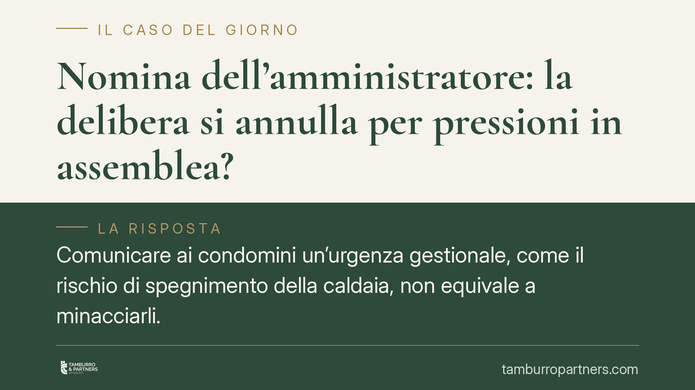

Nomina dell'amministratore: la delibera si annulla per pressioni in assemblea?
Comunicare ai condomini un'urgenza gestionale, come il rischio di spegnimento della caldaia, non equivale a minacciarli. La giurisprudenza di merito distingue tra informazione legittima e violenza morale, chiarendo che i vizi del consenso incidono sul singolo voto e devono superare la cosiddetta prova di resistenza. Vediamo cosa significa per chi vuole impugnare la nomina dell'amministratore.

Il caso
Alcuni condomini impugnano la delibera di nomina del nuovo amministratore sostenendo di aver votato sotto pressione. L'amministratore uscente, in assemblea, aveva prospettato conseguenze pratiche immediate in caso di mancata decisione, tra cui il rischio di sospensione del servizio di riscaldamento. I ricorrenti qualificano questa comunicazione come violenza morale, tale da viziare il loro consenso e, di riflesso, l'intera deliberazione.
La questione è ricorrente nella prassi condominiale: fino a che punto l'avviso su un'urgenza reale può trasformarsi in una pressione illegittima che invalida il voto?
Inquadramento normativo
Il punto di riferimento è l'art. 1435 del codice civile, che definisce la violenza come causa di annullamento del contratto quando è "di natura da fare impressione sopra una persona sensata" e da farle temere un male ingiusto e notevole. La parola chiave è *ingiusto*: non ogni timore rileva, ma solo quello indotto dalla prospettazione di un danno contrario al diritto.
Prospettare una conseguenza che discende dalla legge o dalla natura delle cose – ad esempio l'interruzione di un servizio per mancanza di una decisione gestionale – non integra la minaccia di un male ingiusto. Rientra, anzi, tra i doveri informativi connessi alla funzione. L'art. 1129 del codice civile, che disciplina obblighi, cessazione e passaggio di consegne dell'amministratore, impone a quest'ultimo diligenza nella gestione e nel trasferimento della documentazione: segnalare un'urgenza operativa è coerente con tale posizione, non ne costituisce un abuso.
Quanto all'incidenza del vizio, i vizi del consenso operano sul singolo voto, non automaticamente sull'intera delibera. Occorre applicare la cosiddetta prova di resistenza: si eliminano idealmente i voti viziati e si verifica se la maggioranza – per teste e per millesimi, secondo i quorum dell'art. 1136 c.c. – regge comunque. Se la delibera resiste, l'annullamento non è concesso.
Implicazioni pratiche
Per il condomino che si ritiene "forzato", la soglia è alta. Non basta affermare di aver subito pressione: va dimostrato che la comunicazione configurava un male ingiusto e che, senza quei voti, la maggioranza non si sarebbe formata.
È inoltre essenziale rispettare i tempi. L'impugnazione delle delibere annullabili è regolata dall'art. 1137 del codice civile: il ricorso va proposto entro 30 giorni, che decorrono dalla data della deliberazione per i condomini dissenzienti o astenuti, e dalla comunicazione del verbale per gli assenti. Si tratta di un termine perentorio: oltre quella soglia la delibera annullabile si consolida e non è più contestabile per quei vizi.
Per l'amministratore uscente, la pronuncia conferma che informare su rischi gestionali reali non espone, di per sé, a responsabilità. Il confine resta però sottile: un conto è descrivere una conseguenza oggettiva, un altro è presentarla in modo distorto o strumentale per orientare il voto.
Cosa fare in concreto
- Verificare la natura della pressione: distinguere l'informazione su un'urgenza reale dalla minaccia di un male ingiusto e notevole ex art. 1435 c.c.
- Ricostruire i numeri del voto: calcolare quorum per teste e per millesimi ed eseguire la prova di resistenza eliminando i voti asseritamente viziati.
- Controllare i termini: individuare con precisione il *dies a quo* dei 30 giorni dell'art. 1137 c.c., diverso tra assenti e dissenzienti/astenuti.
- Documentare il verbale: conservare copia integrale, annotazioni, eventuali dichiarazioni a verbale e prove delle circostanze dedotte.
- Valutare preliminarmente, in forma impersonale e oggettiva, se verbale e circostanze offrano elementi idonei a superare sia la prova sul vizio sia quella di resistenza, prima di assumere iniziative giudiziali.
Conclusione
La distinzione tra informare e minacciare è il cuore della questione. La prospettazione di un'urgenza gestionale reale non è violenza morale, e anche quando un vizio del consenso esiste, la delibera può reggere grazie alla prova di resistenza. Chi intende impugnare deve muoversi su due fronti – la qualificazione del vizio e la tenuta dei numeri – e, soprattutto, entro i trenta giorni di legge.
Contributo informativo a cura di Tamburro & Partners – Avv. Giuseppe Tamburro. Non costituisce parere legale.
Ogni condominio ha una storia a sé.
Se gestisci un'amministrazione e vuoi un confronto su una specifica questione condominiale, scrivi allo studio. Ti rispondiamo entro un giorno lavorativo.